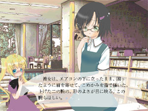

ホーム
海の底の廃墟 希望入りパン菓子

これは図書室の物語。
坂上 冬子
彼女は平凡な人間だと思う。 美人だという。学校にあまり真面目に通わないという。救急用品をいつも持ち歩いている、という。果ては、付き合っていた男を自殺させたことがあるという。 こうして並べてゆくと、彼女が生きている世界の、あまりの小ささに、ため息が漏れる。 だから坂上冬子は、鍵を集める。 鍵を手に入れるたびに、自分のための扉が増えるような気がして。
こんな姿をしているが、高校生だ。 少女まんが家・刑部真芯の描く主人公の姿は時として、年齢のわりにあまりに幼く、小さい。たとえば恋人の男と並ぶと、頭のてっぺんが男のウェストにやっと届く、というような。これは、客観的な外見を表現したものではない。作品の根源的な要請にもとづく、幻想的な表現だ。 同じ要請にもとづいて、藤島智佳子はこんな姿をしている。 心の切っ先が、痛々しいまでに鋭く。 傷つくことを恐れることを、恐れている。
藤島 智佳子